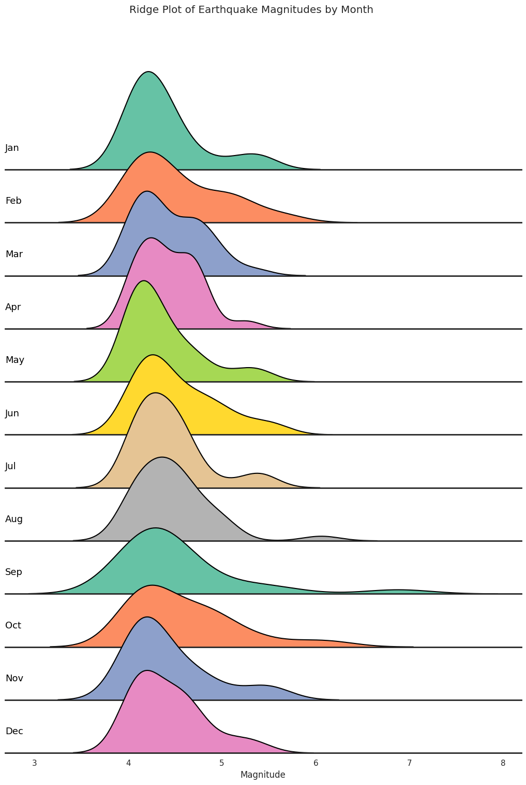

Recently, Taiwan experienced a magnitude 7.4 earthquake, and another magnitude 6.1 earthquake occurred at 3:13 a.m. on April 27th. With an increase in seismic activity, concerns about the region’s vulnerability to earthquakes and the potential impact on its population, infrastructure, and economy are rising. Situated in an active seismic zone, earthquake analysis is crucial for assessing risks and disaster management. This project aims to conduct an analysis of earthquake activity in Taiwan, including its frequency and magnitude distribution, with the goal of enhancing seismic resilience and preparedness measures.
The image shows a map of Taiwan, an island located in East Asia. The map not only showcases the geographical features of Taiwan but also shows its administrative divisions, including counties and cities.
Taiwan is administratively divided into 13 counties, 3 county-controlled cities, and 6 special municipalities. The counties include areas like Hsinchu County, Miaoli County and Changhua County, among others. The three cities are Hsinchu City, Keelung City, and Chiayi City. Special municipalities are Taipei City, New Taipei City, Taoyuan City, Taichung City, Tainan City, and Kaohsiung City. These administrative divisions form the foundation of Taiwan's local governance and organization.
The dataset used in this analysis is obtained from the Taiwan Central Weather Administration’s Taiwan Geophysical Database Management System, covering earthquake records from Jan 1, 1973, to March 21, 2024 with magnitude greater than 4.0. The dataset includes fifteen attributes:
The quality attribute is classified into four ranks (A, B, C, D) based on the number of stations, gap, and minimal epicentral distance of stations. See the table below for details:
| Quality | Number of Stations | Gap | Minimal Epicentral Distance of Station |
|---|---|---|---|
| A | >= 6 | <= 90 | <= Depth or 5 km |
| B | >= 6 | <= 135 | <= 2 Depth or 10 km |
| C | >= 6 | <= 180 | <= 50 km |
| D | others | - | - |
The limitation is that this dataset only has attributes of longitude and latitude and thus is difficult in geospatial analysis. Without city or county information, it's challenging to perform geospatial analysis to identify regions with higher seismic activity. Analyzing earthquakes based solely on latitude and longitude coordinates may not provide sufficient details to pinpoint specific areas prone to frequent earthquakes.
This histogram displays the frequency of earthquakes occurring during different 2-hour intervals in a day (12 time periods in total). It helps to identify the time period when earthquakes are most frequent.
This histogram categorizes earthquakes based on their quality, providing a comparison of earthquake frequencies across different quality categories. It helps to understand the relationship between earthquake occurrence and quality and find the time period within a day when earthquakes are most frequent.
This violin plot shows the distribution of earthquake magnitudes across different months. It helps to identify the month with the highest magnitude earthquake and find the pattern of the magnitude distribution density across different months.
Implemented this plot by referring to this page.
This ridgeline plot visualizes the distribution of earthquake magnitudes for each month using Kernel Density Estimation plots. It helps to find the month with the highest magnitude earthquake and compare the magnitude distribution density across different months, with the y-axis representing the density of earthquake distribution for magnitudes.
The bar chart visualizes the frequency and magnitude distribution of earthquakes over time. It helps in understanding the temporal patterns of seismic activity in Taiwan and identifying periods of increased or decreased earthquake occurrences.